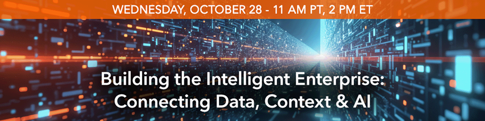

Enterprise AI needs more than access to data. AI applications and agents need context to understand relationships, retrieve relevant information, and make better decisions.
The challenge is connecting data, knowledge, and interactions across the enterprise and turning them into context AI can use. Organizations are turning to knowledge graphs, agent memory, RAG, and other approaches to uncover relationships, maintain context, and ground AI in relevant enterprise information.
To explore these strategies, Enterprise AI World is bringing together industry experts for a special roundtable webinar on connecting data, context, and AI to build more accurate, reliable, and intelligent applications.
You'll learn how to:
Don't miss this live event on Wednesday, October 28th, 11:00 AM PT / 2:00 PM ET.
Register Now to attend the webinar Building the Intelligent Enterprise: Connecting Data, Context & AI.